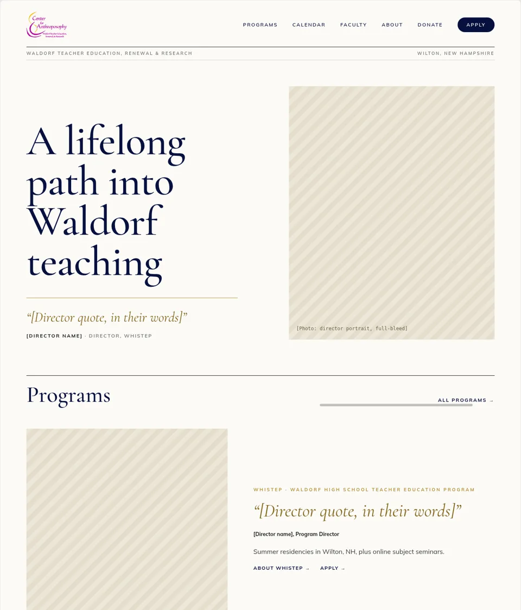
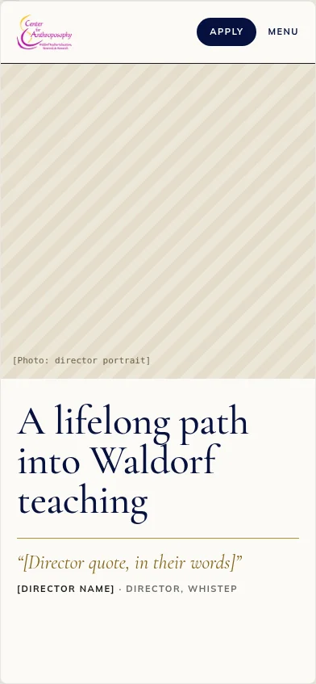
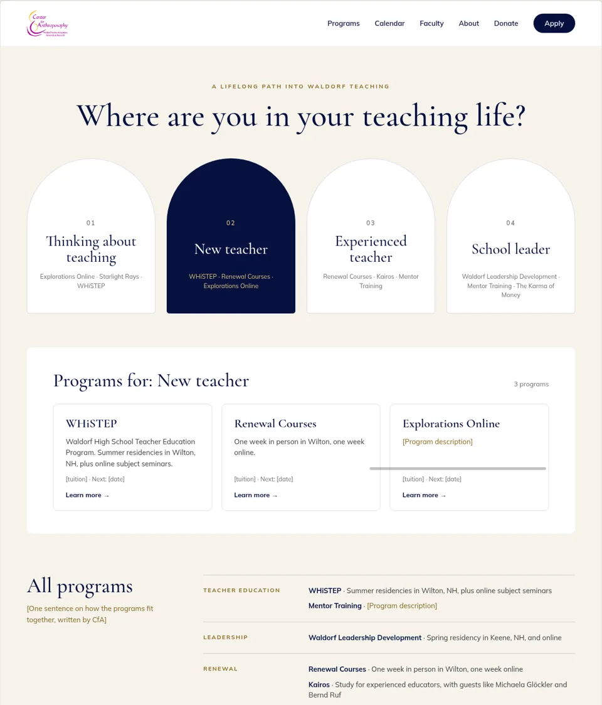
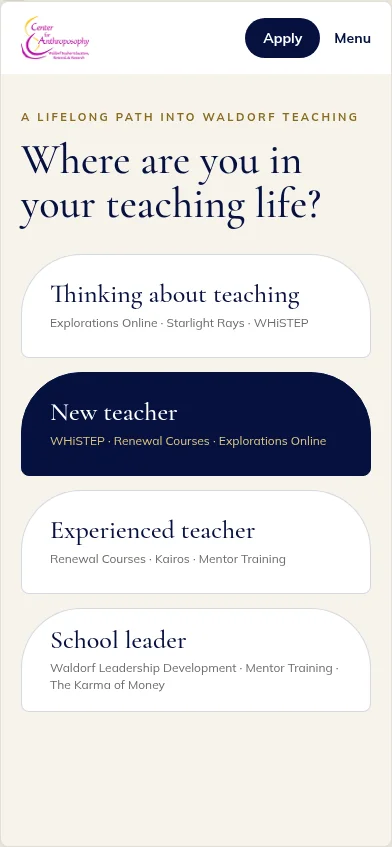
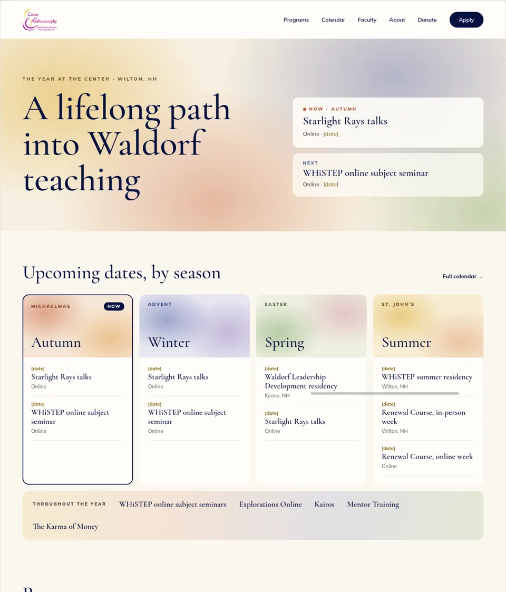
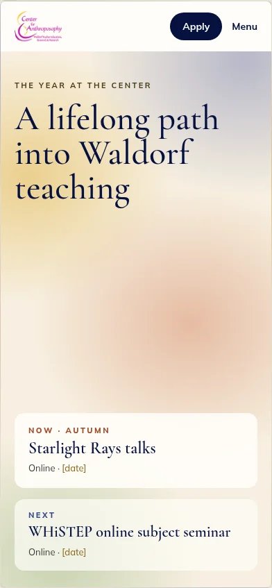

Take a look at each one, then tell us which you like best. It takes about a minute.
These are early sketches. The words, photos, dates and prices are placeholders on purpose: CfA's own people will write the words. Look at the feel and at how each page is organized.
Built around the program directors. Each program opens with the director's portrait and a few words in their own voice, like a magazine. People come to study with a person.


Opens with one question: where are you in your teaching life? Four doors (thinking about teaching, new teacher, experienced teacher, school leader) each lead to the programs that fit.


A living calendar. The homepage shows what's happening now and next, arranged by the seasons and festivals of the year, with soft watercolor washes.


Pick a favorite and, if you like, a second choice and a line on what you'd keep.
Vote for your favorite